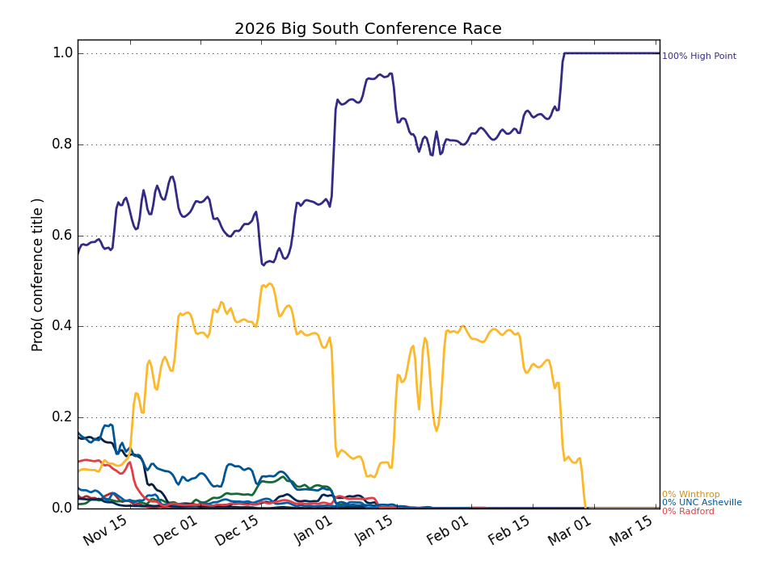
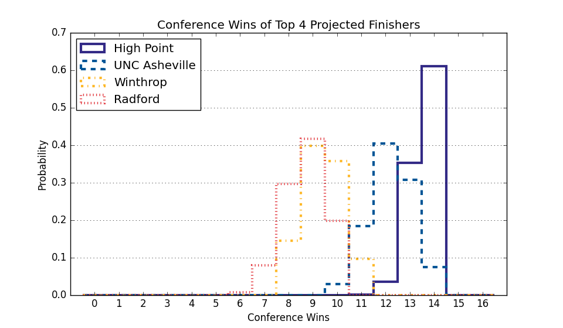

| Home | Game Probabilities | Conferences | Preseason Predictions | Odds Charts | NCAA Tournament |
| Big South | Current Record | Projected Record | Projected Finish (% odds, with tiebreakers) | |||||||||||
|---|---|---|---|---|---|---|---|---|---|---|---|---|---|---|
| Team | Conf. | Overall | Conf. | Overall | 1st | 2nd | 3rd | 4th | 5th | 6th | 7th | 8th | 9th | |
| 1. | Radford (170) | 0 - 0 | 3 - 3 | 9.9 - 6.1 | 16.8 - 12.2 | 20.9 | 17.6 | 15.8 | 14.2 | 12.5 | 9.0 | 6.2 | 3.2 | 0.6 |
| 2. | Winthrop (177) | 0 - 0 | 3 - 3 | 9.8 - 6.2 | 15.1 - 12.9 | 19.8 | 17.2 | 15.7 | 14.7 | 12.4 | 9.3 | 6.7 | 3.6 | 0.7 |
| 3. | UNC Asheville (187) | 0 - 0 | 2 - 3 | 9.5 - 6.5 | 14.6 - 13.4 | 17.2 | 16.8 | 14.6 | 14.5 | 13.3 | 10.7 | 7.7 | 4.2 | 0.9 |
| 4. | Gardner Webb (182) | 0 - 0 | 1 - 4 | 8.3 - 5.7 | 12.3 - 13.7 | 19.1 | 17.5 | 15.8 | 13.1 | 9.2 | 9.5 | 9.3 | 5.5 | 1.0 |
| 5. | Longwood (215) | 0 - 0 | 5 - 1 | 8.8 - 7.2 | 17.9 - 11.1 | 10.7 | 12.2 | 13.7 | 13.9 | 15.8 | 14.4 | 10.1 | 7.3 | 2.0 |
| 6. | High Point (225) | 0 - 0 | 2 - 3 | 8.4 - 7.6 | 15.0 - 14.0 | 8.1 | 10.9 | 12.3 | 14.0 | 15.6 | 15.4 | 12.3 | 9.0 | 2.3 |
| 7. | Presbyterian (289) | 0 - 0 | 4 - 3 | 5.8 - 8.2 | 12.5 - 14.5 | 2.1 | 4.9 | 6.6 | 7.4 | 8.8 | 13.6 | 21.4 | 25.6 | 9.5 |
| 8. | USC Upstate (288) | 0 - 0 | 1 - 4 | 6.4 - 9.6 | 9.4 - 16.6 | 2.0 | 2.9 | 5.4 | 7.8 | 11.2 | 15.5 | 20.4 | 24.2 | 10.5 |
| 9. | Charleston Southern (354) | 0 - 0 | 0 - 5 | 3.0 - 13.0 | 3.9 - 22.1 | 0.1 | 0.1 | 0.1 | 0.4 | 1.1 | 2.4 | 5.9 | 17.4 | 72.4 |
| Projected Finish (% odds, no tiebreakers) | |||||||||||
|---|---|---|---|---|---|---|---|---|---|---|---|
| Team | Outright | 1st | 2nd | 3rd | 4th | 5th | 6th | 7th | 8th | 9th | |
| 1. | Radford | 17.5 | 24.9 | 18.6 | 15.9 | 14.3 | 11.1 | 7.2 | 4.9 | 2.6 | 0.4 |
| 2. | Winthrop | 16.7 | 23.7 | 18.3 | 16.0 | 14.5 | 11.3 | 7.4 | 5.5 | 2.9 | 0.4 |
| 3. | UNC Asheville | 14.0 | 20.6 | 18.1 | 15.2 | 15.0 | 12.0 | 8.6 | 6.3 | 3.4 | 0.6 |
| 4. | Gardner Webb | 18.8 | 19.4 | 17.8 | 16.2 | 14.9 | 9.4 | 7.9 | 8.8 | 4.7 | 0.9 |
| 5. | Longwood | 8.3 | 13.2 | 13.7 | 14.4 | 15.2 | 15.2 | 11.8 | 8.8 | 6.2 | 1.5 |
| 6. | High Point | 6.3 | 10.4 | 12.2 | 13.5 | 15.0 | 15.5 | 12.8 | 11.3 | 7.8 | 1.5 |
| 7. | Presbyterian | 1.9 | 2.5 | 5.0 | 7.4 | 9.2 | 10.4 | 10.9 | 20.4 | 24.9 | 9.4 |
| 8. | USC Upstate | 1.5 | 2.6 | 4.1 | 6.2 | 9.4 | 12.7 | 14.5 | 18.9 | 23.2 | 8.3 |
| 9. | Charleston Southern | 0.0 | 0.1 | 0.1 | 0.2 | 0.6 | 1.5 | 2.8 | 7.0 | 19.0 | 68.6 |


| Date | Away | W Prob, Pred Score | Home | |||
|---|---|---|---|---|---|---|
| Nov. 29 | USC Upstate | 44.4% | 72 | 73 | 55.6% | Coastal Carolina |
| Nov. 29 | Gardner Webb | 53.6% | 69 | 68 | 46.4% | Queens |
| Nov. 29 | Morgan St. | 11.0% | 71 | 87 | 89.0% | High Point |
| Nov. 29 | Radford | 39.1% | 64 | 67 | 60.9% | Old Dominion |
| Nov. 29 | Florida A&M | 21.7% | 61 | 70 | 78.3% | Presbyterian |
| Dec. 02 | South Carolina St. | 49.1% | 79 | 80 | 50.9% | Charleston Southern |
| Dec. 02 | Winthrop | 67.3% | 78 | 73 | 32.7% | Coastal Carolina |
| Dec. 02 | Western Carolina | 45.3% | 66 | 68 | 54.7% | Gardner Webb |
| Dec. 02 | High Point | 52.6% | 80 | 79 | 47.4% | North Florida |
| Dec. 02 | Longwood | 72.6% | 76 | 69 | 27.4% | Morgan St. |
| Dec. 02 | USC Upstate | 41.5% | 65 | 68 | 58.5% | North Carolina Central |
| Dec. 02 | Presbyterian | 37.6% | 71 | 74 | 62.4% | VMI |
| Dec. 03 | Elon | 12.4% | 65 | 78 | 87.6% | Radford |
| Dec. 03 | Longwood | 72.6% | 76 | 69 | 27.4% | Morgan St. |
| Dec. 05 | Western Carolina | 54.2% | 78 | 77 | 45.8% | High Point |
| Dec. 05 | UNC Asheville | 46.6% | 77 | 78 | 53.4% | Kennesaw St. |
| Dec. 05 | Queens | 19.8% | 71 | 81 | 80.2% | Winthrop |